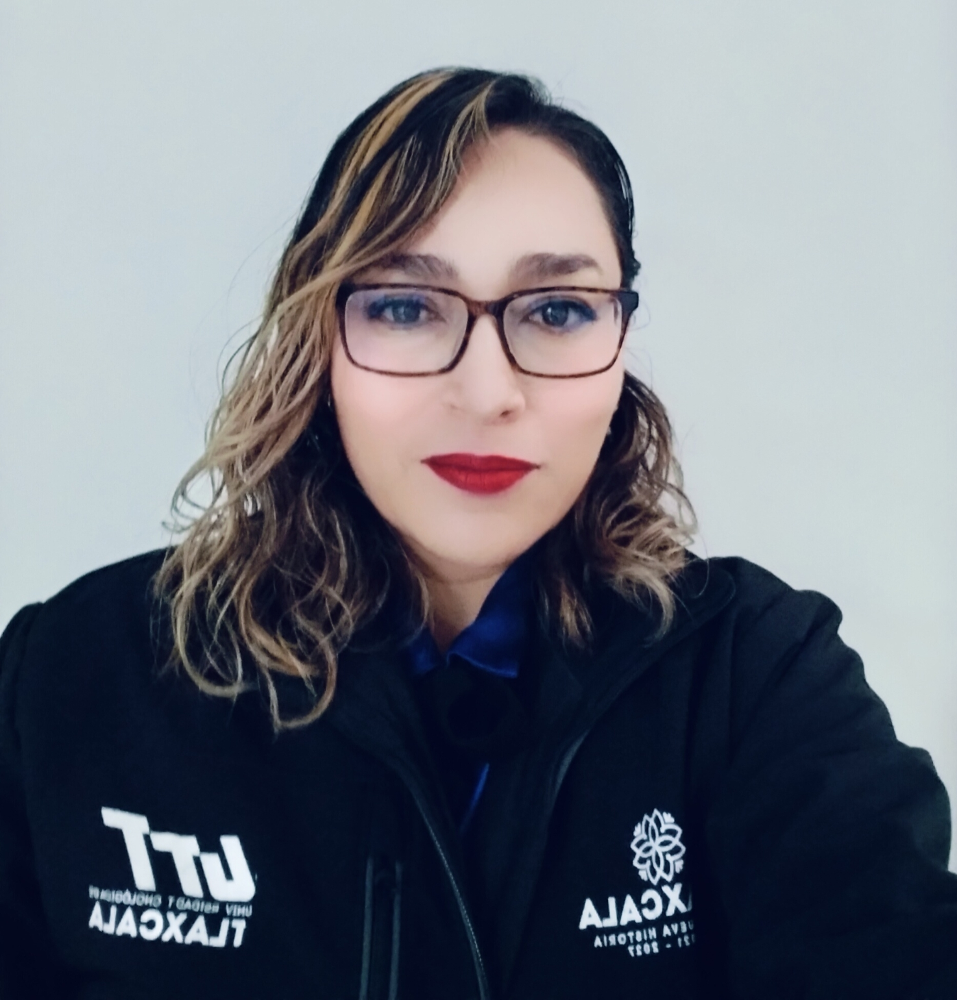
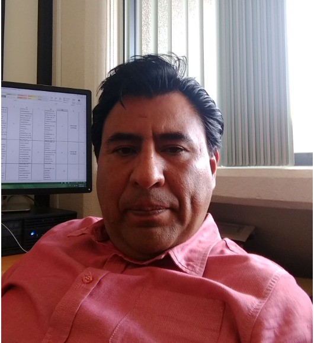
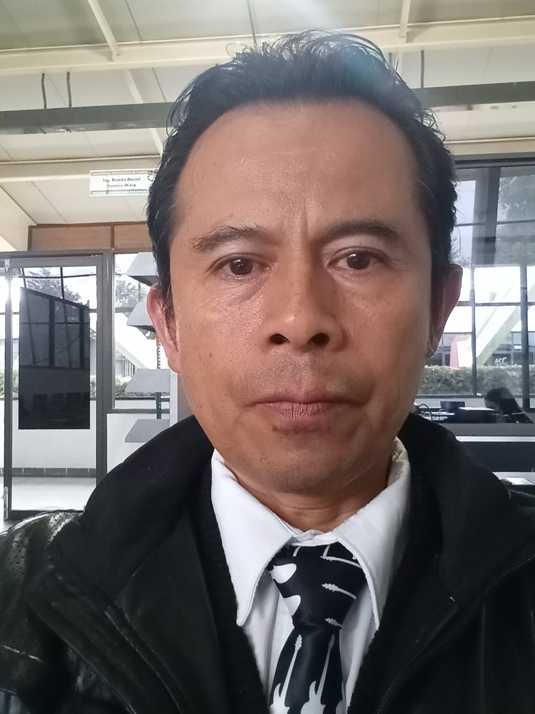
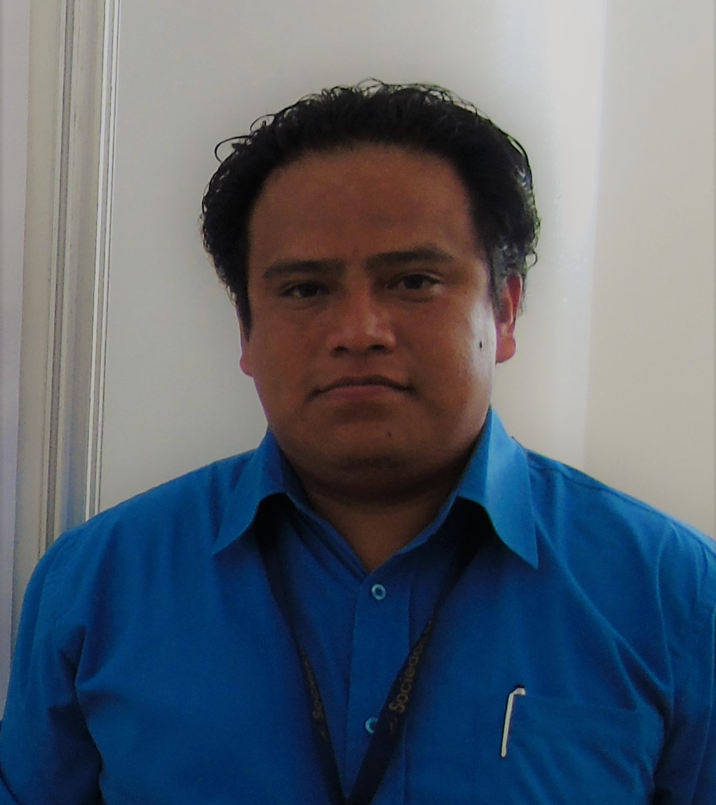

Núcleo Académico Básico
Dr. José Víctor Galaviz Rodríguez
Líder del Cuerpo Académico
Línea: Gestión de Proyectos
galaviz_4@uttlaxcala.edu.mx
Dra. Sonia López Rodríguez
Responsable IIoT
Línea: Industria 4.0 / Ciencias Inmersivas
sonnysutt@uttlaxcala.edu.mx
Dr. Francisco Javier Espinosa Moreno
Investigador SNII
Línea: Sistemas Energéticos Sustentables
francisco.espinosa@uttlaxcala.edu.mx
Dr. José Luis Hernández Corona
Investigador
Línea: Automatización y Control
joseluis.hernandez@uttlaxcala.edu.mx
Dr. Román Daniel Romero Mitre
Investigador
Línea: Manufactura Avanzada
roman.romero@uttlaxcala.edu.mx
M.I. Jonny Carmona Reyes
Investigador
Línea: Educación Técnica y Automatización
jonny.carmona@uttlaxcala.edu.mx
M. en C. Ricardo Ramos Aguilar
Investigador
Línea: Inteligencia Artificial / Machine Learning
ricardo.ramos@uttlaxcala.edu.mx